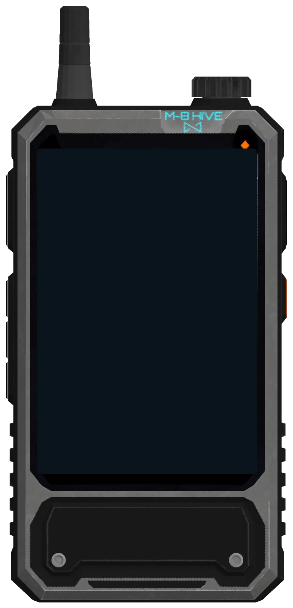
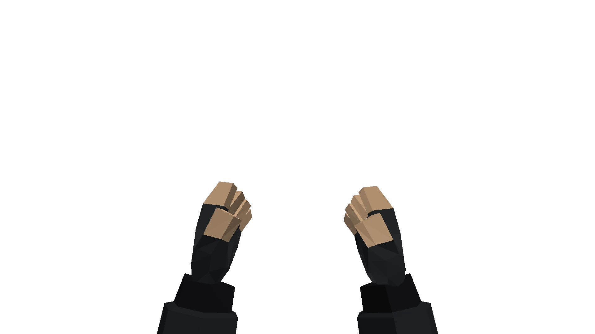
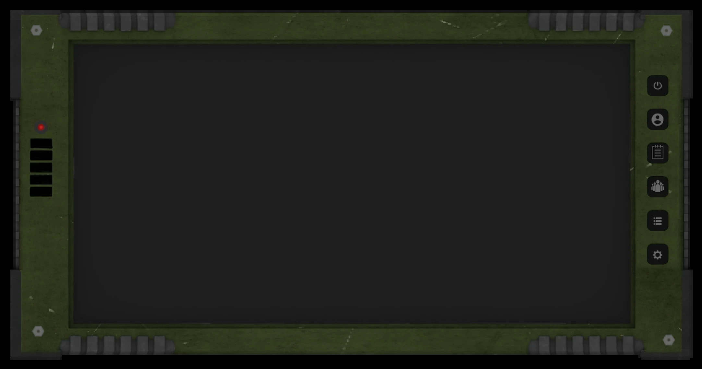

| 1 2 3 4 | Ships, ground, planet, star system |
| Wheel | Zoom; past the limit it moves ground, planet, system |
| Click | Select a group (Ground) |
| Shift + drag | Box-select groups |
| Right click | March the selection there (Shift: sprint) |
| P | Stance of the selected group: stand, crouch, cover, cover aim, prone, aim |
| Drag / WASD | Pan (turn the ship in Ships) |
| Q / E | Rotate the camera |
| F | Follow the units again |
| Space | Launch to the other planet (System) |
| O / R | Outlines / chunky pixels |
| T | Day speed: normal, fast, paused |
| L | Frame cap: off, 60, 30 |
| N | Army size: 2k, 20k, 100k, 500k (Ground) |
| H | Hide this help |
Debug page (blueprints, terrain chunks)



Coming once the basic systems are in.